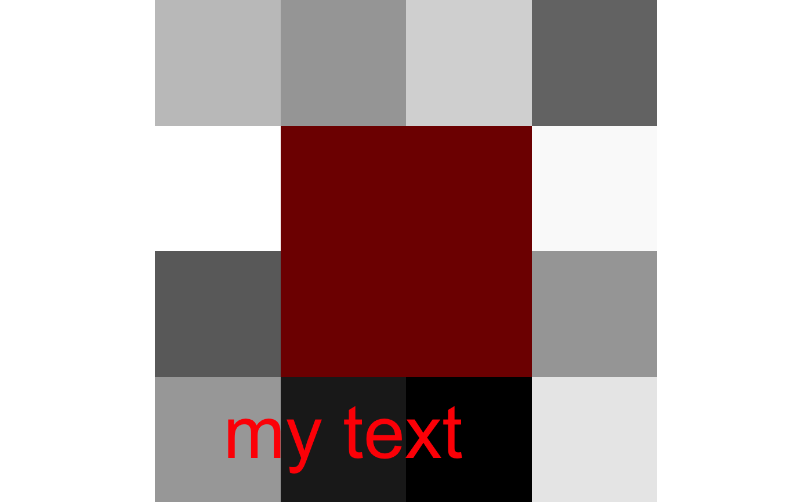

plot.antsImage.RdThis is a plotting utility for antsImage types with a background and color overlay option. Useful for displaying statistical results overlaid on a background image.
# S3 method for antsImage plot(x, y, color.img = "white", color.overlay = c("jet", "red", "blue", "green", "yellow", "viridis", "magma", "plasma", "inferno"), axis = 2, slices, colorbar = missing(y), title.colorbar, title.img, title.line = NA, color.colorbar, window.img, window.overlay, quality = 2, outname = NA, alpha = 1, direction = 1, begin = 0, end = 1, newwindow = FALSE, nslices = 10, domainImageMap = NA, ncolumns = 4, useAbsoluteScale = FALSE, doCropping = TRUE, text, ...)
| x | the reference image on which to overlay. |
|---|---|
| y | image or list of images to use as overlays. |
| color.img | color for main image. |
| color.overlay | the color for the overlay , e.g c('blue','red') length of this list should match the image list. anything from colormap package. |
| axis | the axis to slice (1 , 2 or 3) |
| slices | vector of slices to plot (e.g., c(10, 15, 20)) |
| colorbar | make colorbar? |
| title.colorbar | title for colorbar |
| title.img | title for main image (not displayed when file is saved with outname) |
| title.line | title vertical displacement (irrelevant when a file is saved with outname) |
| color.colorbar | color scale to use for colorbar |
| window.img | lower and upper thresholds for display of main image |
| window.overlay | lower and upper thresholds for display of overlay.
if you set |
| quality | integer quality magnification factor 1 => large (e.g. 10) |
| outname | name of output file if you want to write result to file, e.g.
|
| alpha | opacity |
| direction | Sets the order of colors in the scale. If 1, the default, colors are ordered from darkest to lightest. If -1, the order of colors is reversed. |
| begin | The (corrected) hue in [0,1] at which the viridis colormap begins. |
| end | The (corrected) hue in [0,1] at which the viridis colormap ends |
| newwindow | boolean controlling if we open a new device for this plot |
| nslices | number of slices to view |
| domainImageMap | this input antsImage or list contains a reference image
( |
| ncolumns | number of columns in plot |
| useAbsoluteScale | boolean determines whether dynamic range is maximized when visualizing overlays |
| doCropping | apply cropping, defaults to |
| text | vector containing x, y, label, cex and color values passed to
text command, e.g. |
| ... | other parameters |
output is plot to standard R window
img <- makeImage(c(4,4), rnorm(4*4)) mask <- makeImage(c(4,4), as.matrix(c(0,0,0,0, 0,1,1,0, 0,1,1,0, 0,0,0,0), nrow=4)) plot(img, list(mask))#> NULL#> NULL# NOT RUN { img = antsImageRead( getANTsRData( 'r16' ) ) betaVals = rnorm( prod( dim( img ) ), 0, 20 ) betaImg = makeImage( dim( img ), betaVals ) %>% smoothImage( 3.5 ) betaImg[ abs( betaImg ) < 1.5 ] = 0 plot( img, betaImg, window.img=range(img) ,window.overlay=range(betaImg) ) mnit<-getANTsRData('mni') mnit<-antsImageRead(mnit) mniafn<-getANTsRData('mnia') mnia<-antsImageRead(mniafn) mnia<-thresholdImage(mnia,22,25) mnia<-smoothImage(mnia,1.5) mnia2<-antsImageRead(mniafn) mnia2<-thresholdImage(mnia2,1,4) mnia2<-smoothImage(mnia2,1.5) ofn<-paste(tempfile(),'.png',sep='') # write directly to a file plot( mnit, list(mnia,mnia2), slices=seq(50, 140, by=5), window.overlay = c(0.25,1), axis=2, color.overlay=c('red','blue'), outname = ofn ) # }